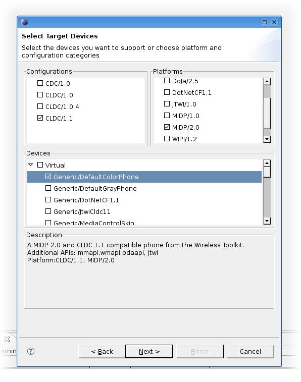
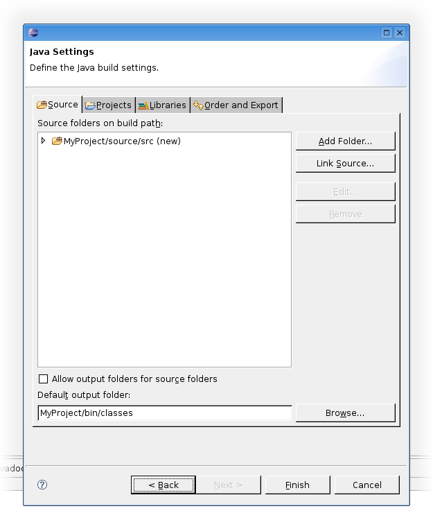

Choose the Mepose Wizard from the New Project menu.

Enter a project name - when you enter the name of an existing project, that project will be converted to a J2ME Polish project.
Alter the paths you want to use in this project. At least WTK Home and J2ME Polish Home must be set.

Select the devices you want to support with this project. Currently you need to convert a J2ME Polish project again for changing the target devices.
Alter the Java settings if you like. Note that all possible jars for the selected devices are already included in the project.
Click "Finish" to create the project.
The project is set up!
<%include end.txt %>